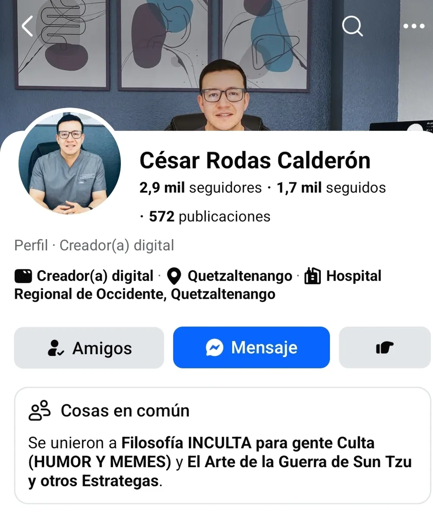
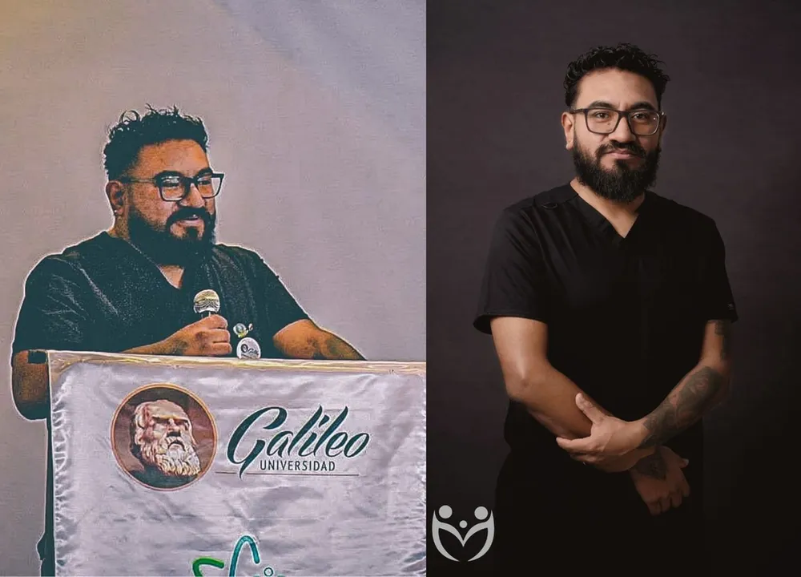
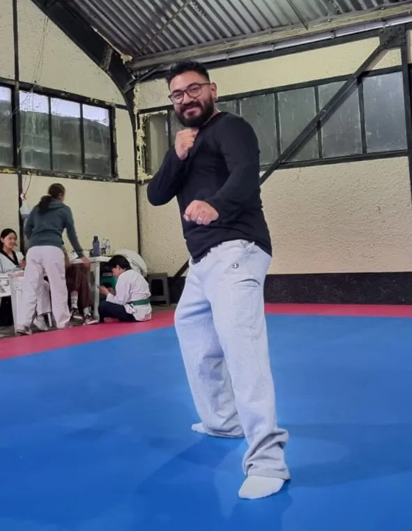
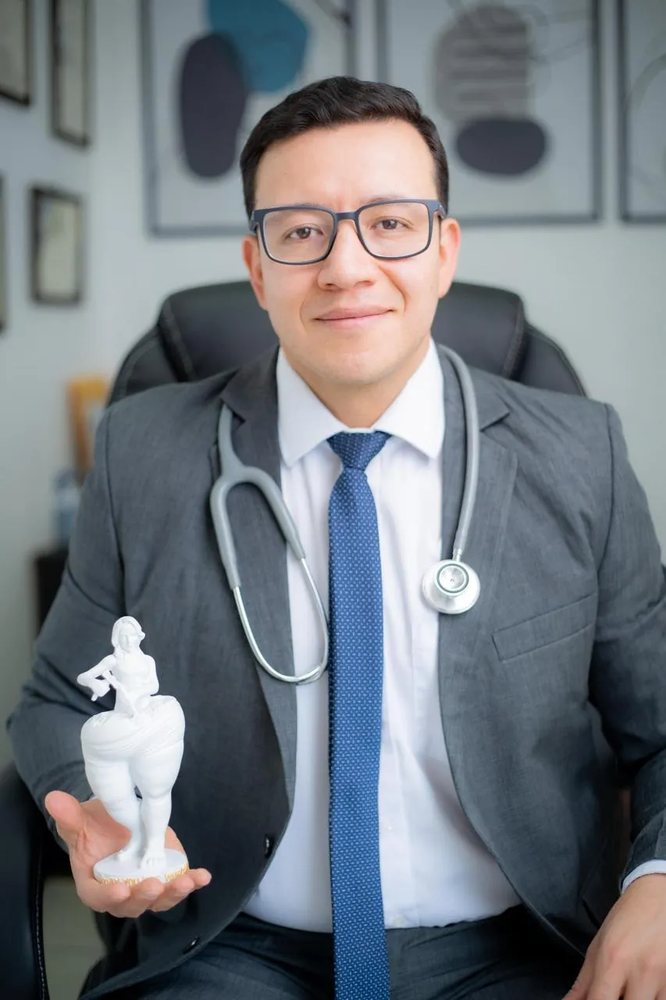

La cirugía milagrosa que me salvó la vida
Cómo perdí peso rápido, saludable y seguro — y por qué esta historia no es sobre verse mejor, sino sobre lo que el sobrepeso hace por dentro, donde no se ve.
Hoy hace exactamente un año
Hoy es viernes 12 de junio. Hace exactamente un año, un viernes 13 de junio del 2025, igual que hoy, entré a una sala de operaciones sabiendo algo que pocos a mi alrededor entendían: estaba eligiendo entre dos caminos, mi cirugía o mi funeral. No lo digo para impresionar. Lo digo porque era literal. Mis exámenes decían lo que mi cuerpo ya gritaba.
Un año después peso 85 libras menos, dejé todos mis medicamentos y volví a entrenar como no lo hacía desde los quince años. Pero esta historia no es para presumir un cambio físico. La escribo porque sé que alguien que la lea hoy está donde yo estaba: luchando contra el peso, frustrado, creyendo que es falta de voluntad, y quizá sin saber que por dentro algo ya está avanzando en silencio.
Aquí te cuento las dos partes de mi historia —la que se ve y la que no— y lo que aprendí en el camino.
Lo que vas a encontrar aquí:
- Por qué el sobrepeso casi nunca es falta de voluntad, sino una enfermedad metabólica.
- Lo que el exceso de peso te hace por dentro, donde no se ve, y que a mí casi me cuesta la vida.
- Qué es de verdad la cirugía bariátrica, sin mitos, y por qué bajar de peso te cambia con o sin ella.
- Por qué lo invisible se puede detectar a tiempo con los estudios correctos.
Lo que se veía
Yo dividía mi problema en dos: lo externo o visible, y lo interno o invisible. Empecemos por lo que cualquiera podía ver.
Pesaba 260 libras. Me sentía mal y me veía mal. No encontraba ropa que me quedara. Tenía limitaciones de movilidad que la gente delgada ni imagina: no "cabía" en los buses ni en los carros pequeños donde todos los demás caben sin pensarlo. Me dolían las rodillas y las caderas. Entreno taekwondo desde hace años, y el sobrepeso me hundió el rendimiento y la movilidad. Lo visible ya era duro. Pero no era lo que me iba a matar.
Lo que nadie veía
Por dentro pasaban dos cosas. La primera era emocional. La frustración de no poder bajar de peso era tremenda. Me esforzaba de verdad, pero era como intentar dejar de respirar: puedes aguantar la dieta un rato, pero al final cedes, porque el cuerpo te lo pide y se resiste. Me sentía incapaz de lograr mis propios objetivos.
La segunda era de salud, y era la peligrosa. Era prácticamente diabético. Tenía la presión alta sin control. Y mis triglicéridos llegaron a 3,000, cuando a un paciente ya se le considera muy enfermo con 500. No dormía bien. Mi ánimo estaba por el suelo.
Todo se desbordó al volver de unas vacaciones en un país del Caribe, con mucho calor. No las pude disfrutar: sufrí, mi cuerpo se hinchó. Al regresar consulté con varios médicos y la respuesta era siempre la misma: el sobrepeso. Pero yo, que soy personal de salud, leía mis exámenes y entendía lo que nadie me decía con esas palabras: estaba, en la práctica, desahuciado. Ahí lo tuve claro: iba a pagar una de dos cosas, mi cirugía o mi funeral.
El sobrepeso casi nunca es falta de voluntad
Durante años cargué una culpa que hoy sé que estaba mal puesta. Si tú también crees que no bajas de peso porque no te esfuerzas lo suficiente, quiero que leas esto con calma.
Desde 2013, la Asociación Médica Americana (AMA) reconoce oficialmente la obesidad como una enfermedad: una condición crónica con causas fisiológicas, no un defecto de carácter. Detrás del exceso de peso hay genética, hormonas y metabolismo. Hormonas como la leptina y la grelina regulan el hambre y la saciedad; cuando ese sistema se desajusta —algo común en la obesidad— el cuerpo literalmente pelea por mantener el peso, con resistencia a la insulina de por medio. Por eso hacer dieta a pura fuerza de voluntad se siente como "intentar dejar de respirar": estás peleando contra tu propia biología.
Entenderlo no es una excusa para no hacer nada. Es lo contrario: es dejar de gastar energía en culparte y empezar a tratarlo como lo que es, un problema de salud que tiene soluciones.
Lo que el exceso de peso hace por dentro
Lo más engañoso del sobrepeso es que el daño grave ocurre donde no se ve. Mientras por fuera "solo" te ves más grueso, por dentro el exceso de grasa empuja varias enfermedades a la vez.
La obesidad es un motor de diabetes tipo 2, presión alta, colesterol y triglicéridos elevados, y enfermedad del corazón. Está muy ligada al hígado graso, que avanza callado durante años. Se asocia a la apnea del sueño —ese cansancio con el que yo cargaba—, a problemas de rodillas y caderas, y a la salud mental. Y hay un dato que casi nadie conoce: la Agencia Internacional para la Investigación del Cáncer (IARC) vincula el exceso de grasa corporal con al menos 13 tipos de cáncer, entre ellos los de colon, hígado, páncreas, riñón y mama posmenopáusica.
Nada de esto se ve en el espejo. Se ve en los exámenes. Por eso insisto tanto, más adelante, en conocer tus números.
Mi decisión y un nombre que quiero que recuerdes
Cuando entendí que era cirugía o funeral, un amigo cirujano me recomendó al Dr. César Rodas Calderón, en Quetzaltenango. Llegué a su consulta ya decidido. Aun así, él se tomó el tiempo de darnos toda una clase sobre la cirugía bariátrica y sus beneficios, con una paciencia y una claridad que me terminaron de dar confianza. Acordamos operarme, y me dio todas las facilidades y la comprensión que mi caso necesitaba.
¿Tuve miedo? Sí. Pero ya sabía dos cosas: que la posibilidad de morir en la cirugía era mucho menor que la de morir de un infarto si no hacía nada, y que mi incapacidad para bajar de peso no era flojera, sino un problema mayor. El Dr. Rodas me operó el viernes 12 de junio de 2025. Para mí fue un milagro con nombre y apellido: un profesional que resolvió todo lo que necesité, y que tiene mi confianza y mi respeto.

Qué es la cirugía bariátrica (y qué no es)
Como hay muchos mitos, déjame ser claro. La cirugía bariátrica —hoy también llamada cirugía metabólica— es un tratamiento para la obesidad que modifica el aparato digestivo para reducir cuánto puedes comer y absorber, y para bajar las señales de hambre. No es estética: las sociedades médicas que la estudian (ASMBS e IFSO) la describen como el tratamiento más eficaz, basado en evidencia, para la obesidad. Los estudios a largo plazo muestran pérdidas de peso sostenidas, altas tasas de remisión de la diabetes y hasta reducción de la mortalidad.
Existen varios tipos —la manga gástrica, el bypass gástrico, la banda, entre otros—, cada uno con su técnica. En mi caso fue una manga gástrica, que es lo que el Dr. Rodas indicó para mí y me dio excelentes resultados. Pero aquí va algo clave: cuál es la mejor para ti no lo decides por lo que leíste, ni lo decido yo por lo que viví. Lo define el cirujano bariatra según tu caso. Esa es su decisión, y es justamente parte del valor de ponerte en buenas manos.
Pero seré igual de honesto con lo otro, porque la verdad también cuida: es una cirugía mayor. No es magia ni "la salida fácil". Exige cambios de por vida en la forma de comer, suplementación y seguimiento médico permanente. Y los resultados no son idénticos en todas las personas: en mi caso fueron extraordinarios, pero entiendo que no en todas será igual. Por eso la decisión se toma con un equipo médico, evaluando tu caso, nunca por moda ni por presión.
El proceso, sin magia
La gente cree que uno se opera y despierta delgado. No es así. Al salir de la cirugía sentí dolor —sabía que era normal, y los medicamentos lo hicieron soportable—. A las pocas horas, el doctor me indicó levantarme a caminar lo antes posible, y lo hice. Curiosamente no sentí hambre (creo que es parte del proceso), aunque sí se sentía extraño no poder comer.
Me dieron de alta el sábado 14 de junio. Mi dieta fue estrictamente líquida durante dos semanas. Y aquí pasó algo que todavía me asombra: ese mismo día, el doctor me indicó suspender los medicamentos para la presión y la diabetes. No volví a tomar ninguno —ni para la presión, ni para el azúcar, ni para el colesterol o los triglicéridos—. Nunca más.
Lo demás fue disciplina: porciones pequeñas, comer bien, moverme. El bisturí abrió la puerta; cruzarla todos los días dependía de mí.
Un año después
Hoy peso 175 libras. Son 85 menos, y sigo bajando de forma gradual: voy por las 100.
Mis números de salud —presión, azúcar, lípidos— están todos normales, sin un solo medicamento. Mi rendimiento en el taekwondo es como cuando tenía quince años. Tengo brotes de energía, me lleno con facilidad, y por eso comer bien dejó de ser una pelea. Pasé de talla 2XL a M; la ropa que usaba antes simplemente ya no me queda, parece de otra persona. Y la confianza, esa que había perdido, volvió completa.


Bajar de peso te cambia por dentro (con o sin cirugía)
Quiero ser muy claro en algo, porque no todo el mundo necesita ni elige una cirugía: no hace falta llegar al "peso ideal" para recuperar salud. La evidencia es contundente. Perder apenas un 5 a 10 % de tu peso ya mejora de forma medible tu azúcar, tu presión y tu colesterol; así lo demostró el estudio Look AHEAD, uno de los más grandes en personas con sobrepeso y diabetes.
Traducido: si hoy pesas 200 libras, bajar 10 o 20 ya es una victoria de salud real, no un consuelo. La cirugía fue mi herramienta porque mi caso era extremo y el tiempo se me acababa. Pero el principio vale para todos: cada libra que bajas, bien hecha, es salud que ganas por dentro.
Lo que no se ve, se detecta a tiempo
Si algo me enseñó todo esto es que lo invisible es lo que más importa, y lo invisible se mide. Mis triglicéridos en 3,000, mi hígado, mi riesgo metabólico: nada de eso se veía en el espejo. Se vio en los estudios. Y cuando los problemas se detectan a tiempo, se pueden cambiar a tiempo.
Por eso, en el Centro de Diagnóstico La Merced nos tomamos en serio ver lo que no se ve. Hacemos evaluaciones profundas, no solo de la forma de los órganos, sino de cómo funcionan. En el hígado, por ejemplo, vamos más allá de la imagen anatómica: con flujometría espectral Doppler evaluamos el flujo sanguíneo y detectamos alteraciones en pacientes que ya presentan fibrosis o endurecimiento del tejido hepático, cosas que el paciente no siente. Un ultrasonido de hígado y vesícula, una evaluación a tiempo, pueden mostrarte hoy lo que tu cuerpo todavía no te avisa.
Cómo empezar hoy
- Conoce tus números. Hazte una química sanguínea, mídete la presión y, si tienes factores de riesgo, evalúa tu hígado. No puedes cambiar lo que no mides.
- Suelta la culpa y busca ayuda. El sobrepeso es una enfermedad, no un defecto. Habla con un médico y, si puedes, con nutrición. Hay más herramientas de las que crees.
- Empieza por algo pequeño y sostenido. No necesitas transformarte esta semana. Bajar un 5 a 10 % ya mejora tu salud. Una bebida azucarada menos, una caminata más.
En una frase. El sobrepeso no es falta de voluntad, es una enfermedad que daña por dentro donde no la ves; trátala a tiempo, mídela con estudios, y recuerda que cada libra que bajas —con o sin cirugía— es salud que recuperas.
Lo que viene: no tienes que hacerlo solo
Algo aprendí en este año: el cambio no se sostiene en soledad, se sostiene acompañado. Por eso, junto al Dr. César Rodas Calderón estamos construyendo un acompañamiento integral, de un año completo, para quienes deciden dar este paso: educación de la mano de alguien que lo vivió en carne propia y que además es profesional de la salud, la cirugía con un médico de confianza, y controles por ultrasonido a lo largo del año para ver, con evidencia, cómo tu cuerpo va sanando.
Pronto te contaré los detalles. Por ahora quédate con lo esencial: no estás solo, y existe un camino con respaldo médico de principio a fin.
Mi homenaje y mi invitación
Cierro con gratitud. Al Dr. César Rodas Calderón, especialista en cirugía bariátrica y metabólica, de Quetzaltenango: gracias por la profesionalidad y la paciencia con que cambió mi vida. Para mí fue un milagro, y quiero que su nombre quede escrito en mi historia.

Y a ti que me lees: si te identificaste con algo de esto, no esperes a que tu cuerpo te grite como me gritó a mí. Empieza por conocer tus números. Si estás en Quetzaltenango, Salcajá, Totonicapán o cerca, en La Merced con gusto te orientamos sobre qué estudio necesitas —no solo te damos un precio—.
Da el primer paso hoy.
Escríbenos por WhatsApp y te orientamos sobre el estudio que tu caso necesita — química sanguínea de la mano de tu médico, y de nuestro lado, la evaluación por ultrasonido que muestra lo que no se ve.
Escríbenos por WhatsAppTu historia también le sirve a alguien más. Si viviste algo parecido —con el sobrepeso o con una cirugía bariátrica— compártelo en nuestro Facebook: cada testimonio acerca la información a quien hoy la necesita en silencio.
Referencias
Las afirmaciones médicas de este artículo se respaldan en fuentes de alta calidad:
- Asociación Médica Americana (AMA) — Reconocimiento de la obesidad como enfermedad (2013). columbiasurgery.org
- ASMBS e IFSO — Indicaciones de cirugía metabólica y bariátrica (2022). ncbi.nlm.nih.gov
- Estudio SOS (Swedish Obese Subjects), Sjöström et al. — Efectos de la cirugía bariátrica sobre la mortalidad. New England Journal of Medicine. nejm.org
- IARC — Body Fatness and Cancer (obesidad y al menos 13 tipos de cáncer). New England Journal of Medicine. nejm.org
- Look AHEAD Research Group — Beneficios de una pérdida de peso modesta del 5–10 %. Diabetes Care (ADA). diabetesjournals.org
- Cleveland Clinic — Cirugía bariátrica: tipos, criterios y seguimiento. clevelandclinic.org
- Nutrients (MDPI) — Deficiencias de micronutrientes y suplementación tras cirugía bariátrica. mdpi.com
Este contenido es educativo y comparte mi experiencia personal; no reemplaza la consulta con tu médico. La cirugía bariátrica es un procedimiento mayor con indicaciones, riesgos y resultados que varían en cada persona, y debe evaluarse con un equipo médico calificado. Cualquier decisión sobre tu salud, tu peso o tus medicamentos, consúltala con tu profesional de salud. Por transparencia: mantengo una alianza profesional con el Dr. César Rodas Calderón para acompañar a pacientes en este proceso. — Lic. Johnny Rodríguez · Centro de Diagnóstico La Merced · "Diagnósticos que salvan vidas" · Productor de bioimágenes, CEO.